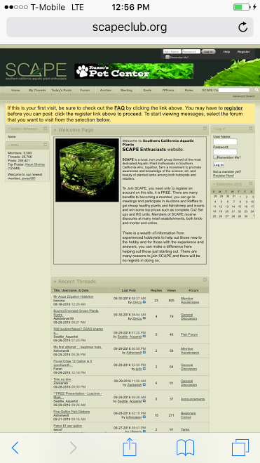
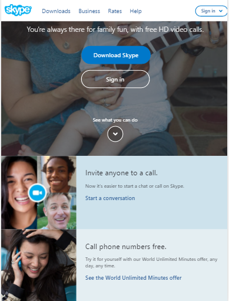
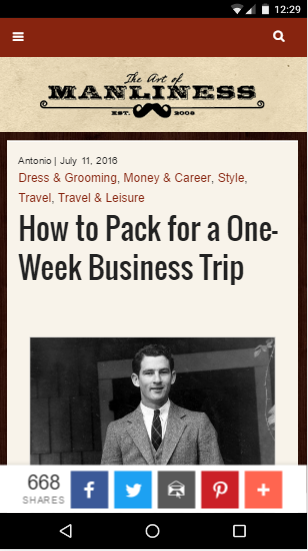
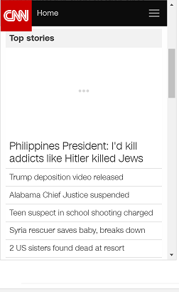

Design Principles in Mobile Sites
Proximity — Zachary Smith
scapeclub.org
This website to me is a great example of Proximity. It has used white space effectively, and the groupings seem to make sense. They have the main purpose of the site in the middle taking up a large amount of space. The login is easy to find and they make it organized and group all the wanted sections of the site at the top.
Alignment — Fekadu Haile
Skype.com
We know that getting alignment right is one of those really important things that can help to enhance an experience for the user. We can see that in this website the alignments are put in the right order. There is a picture of a mom with a child and the text tells us we can be connected with our families for free. When we see the pictures at bottom, both of the pictures are at left and the text descriptions are at right. That shows how it is aligned and calls the interest of the audience. . So since skype has a proper alignment designs, it will make the audience visually more appealing and will also make it easier for users to scan over a page, sub-consciously also offering a calmer reading experience.
Repetition — Daz Buttars
theartofmanliness.com
The Art of Manliness webpage is a good example of Repetition, it uses the same font and color on all of its page’s heads and body text as well as a vintage theme in the photographs used to go along with the articles. This helps the user to see the sites mission statment.
Contrast —
Typography — Scott Croft
CNN.com
Typography was shown well when looking at this website. CNN had designed it so that it would follow a more personalized approach when displaying its material. This is why they followed a linear form of layout when you arrive at the site. You would see the Breaking News first as well as a picture. Then they would give you links to the other recent stories of the week after the movie. It would then end with a vertical version of the bottom of the page, complete with links back the US and National editions as well as an About Us section as well. I wasn’t lost when reading the news and the Layout was easy to follow.